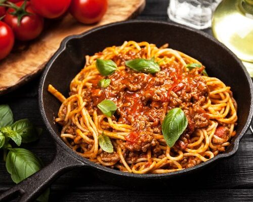

Home
Bolognese

Bolognese
Bolognese is an italian dish, from Bologna, initially served with tagliatelle and not spaghetti.
Over time, the adition of the tomato sauce became popular as we know today.
Ingredients:
- 400g spaghetti
- 2 garlic
- 1 onion
- olive oil
- 300g minced meat
- 1 celery stalk
- salt
- 200g pealed tomato
- 100g tomato pulp
- 2 spoons parmesan cheese
- 1 dried thyme
Steps:
- In a pot, cook the spaghetti in boiling water for 8 minutes.
- Remove from the heat, drain, and set aside.
- Chop the garlic, celery stalk, and onion.
- In a non-stick frying pan, sauté the garlic, celery, and onion in olive oil.
- Add the minced beef, salt, and cook over medium heat.
- Add the diced peeled tomatoes, tomato paste, and dried thyme.
- Mix well and let it cook a bit longer to develop the flavor.
- Serve the spaghetti Bolognese topped with the sauce and sprinkle with grated Parmesan cheese.